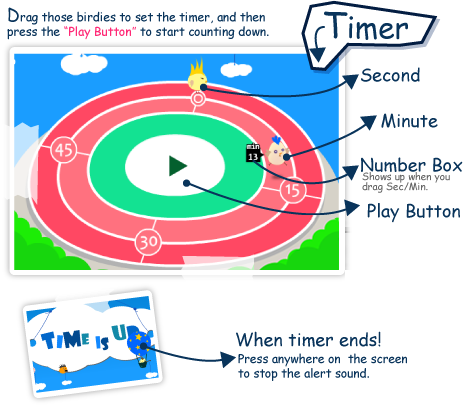
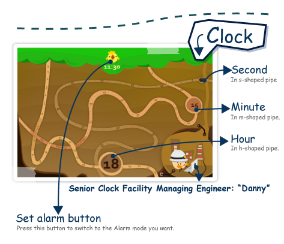
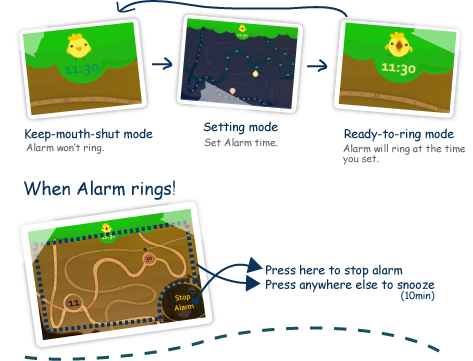

ChirpyTime
2012

ChirpyTime is a lightweight graphical time management app for iPhone / iPod Touch. It is an energy-friendly countdown timer and alarm clock, both operated 24 hours a day by our honorable partners: (plus iOS 4.0 local notification system)
ChirpyTime 是一個童趣插畫風格的計時器和時鐘，可以在IOS上執行。鬧鐘和計時使用IOS的推播功能，所以應用程式關閉的時候，一樣可以叫你起床喔!
How to use 如何使用

計時器 : 拖曳黃色小雞可以設定秒數，藍色小雞可以設定分鐘數，按操場中央的開始按鈕就可以開始計時囉!


鬧鐘 : 點上方的黃色小雞 可以切換設定模式和鬧鐘模式，小雞嘴巴閉著的時候，鬧鐘是關閉的喔!